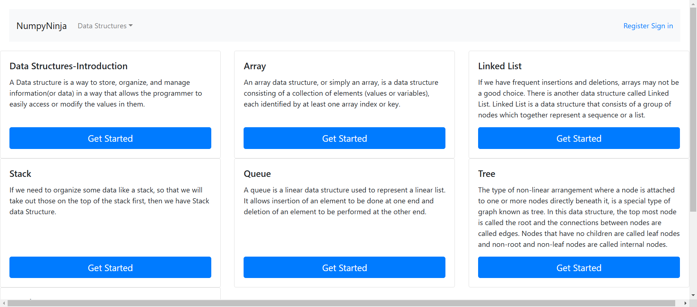

-
Home Page
11:20:39 PM / 00:01:27:822 Pass
Home Page
02.24.2025 11:20:39 PM 02.24.2025 11:22:07 PM 00:01:27:822 · #test-id=1PassVerify warning message when selecting Arrays without signing inGiven User is in the ds-algo launch pageWhen User clicks the Get Started buttonWhen User selects Arrays from the dropdown without signing inThen User should be able to see a warning message You are not logged inPassVerify warning message when selecting Graph without signing inGiven User is in the ds-algo launch pageWhen User clicks the Get Started buttonWhen User selects Graph from the dropdown without signing inThen User should be able to see a warning message You are not logged inPassVerify that the user stays on the same page when clicking elsewhereGiven User is in the ds-algo launch pageWhen User clicks the Get Started buttonWhen User clicks on the launch page other than the Get StartedThen User should stay in the same launch pagePassVerify warning message when selecting Queue without signing inGiven User is in the ds-algo launch pageWhen User clicks the Get Started buttonWhen User selects Queue from the dropdown without signing inThen User should be able to see a warning message You are not logged inPassVerify warning message when selecting Linked List without signing inGiven User is in the ds-algo launch pageWhen User clicks the Get Started buttonWhen User selects Linked List from the dropdown without signing inThen User should be able to see a warning message You are not logged inPassVerify warning message when selecting Tree without signing inGiven User is in the ds-algo launch pageWhen User clicks the Get Started buttonWhen User selects Tree from the dropdown without signing inThen User should be able to see a warning message You are not logged inPassVerify that the user is able to navigate to the home pageGiven User is in the ds-algo launch pageWhen User clicks the Get Started buttonThen User should be able to navigate to the home pagePassVerify that the user can view Data Structures dropdown options without signing inGiven User is in the ds-algo launch pageWhen User clicks the Get Started buttonWhen User clicks on the Data Structures dropdownThen User should be able to see the options: Arrays, Linked List, Stack, Queue, Tree, Graph in the dropdown menuPassVerify warning message when selecting Stack without signing inGiven User is in the ds-algo launch pageWhen User clicks the Get Started buttonWhen User selects Stack from the dropdown without signing inThen User should be able to see a warning message You are not logged in -
Linked List Functionality
11:20:39 PM / 00:08:59:208 Pass
Linked List Functionality
02.24.2025 11:20:39 PM 02.24.2025 11:29:38 PM 00:08:59:208 · #test-id=3PassVerify that the user is able to click on Get Started button under Linked List sectionGiven User is in the ds-algo launch pageWhen User clicks the Get Started buttonThen login with "Login_Valid" and 1When User clicks on the Get Started button under Linked List sectionThen User is navigated to Linked List pagePassVerify that the Introduction link is enabled in the Linked List pageGiven User is in the ds-algo launch pageWhen User clicks the Get Started buttonThen login with "Login_Valid" and 1Given The user is in the Linked List page after Sign-InWhen The user checks whether the Introduction link is enabledThen The user should be able to see Introduction link enabled in the Linked List pagePassVerify that the Creating Linked List link is enabled in the Linked List pageGiven User is in the ds-algo launch pageWhen User clicks the Get Started buttonThen login with "Login_Valid" and 1Given The user is in the Linked List page after Sign-InWhen The user checks whether the Creating Linked List link is enabledThen The user should be able to see Creating Linked List link enabled in the Linked List pagePassVerify that the Types of Linked List link is enabled in the Linked List pageGiven User is in the ds-algo launch pageWhen User clicks the Get Started buttonThen login with "Login_Valid" and 1Given The user is in the Linked List page after Sign-InWhen The user checks whether the Types of Linked List link is enabledThen The user should be able to see Types of Linked List link enabled in the Linked List pagePassVerify that the Implement Linked List in Python link is enabled in the Linked List pageGiven User is in the ds-algo launch pageWhen User clicks the Get Started buttonThen login with "Login_Valid" and 1Given The user is in the Linked List page after Sign-InWhen The user checks whether the Implement Linked List in Python link is enabledThen The user should be able to see Implement Linked List in Python link enabled in the Linked List pagePassVerify that the Traversal link is enabled in the Linked List pageGiven User is in the ds-algo launch pageWhen User clicks the Get Started buttonThen login with "Login_Valid" and 1Given The user is in the Linked List page after Sign-InWhen The user checks whether the Traversal link is enabledThen The user should be able to see Traversal link enabled in the Linked List pagePassVerify that the Insertion link is enabled in the Linked List pageGiven User is in the ds-algo launch pageWhen User clicks the Get Started buttonThen login with "Login_Valid" and 1Given The user is in the Linked List page after Sign-InWhen The user checks whether the Insertion link is enabledThen The user should be able to see Insertion link enabled in the Linked List pagePassVerify that the Deletion link is enabled in the Linked List pageGiven User is in the ds-algo launch pageWhen User clicks the Get Started buttonThen login with "Login_Valid" and 1Given The user is in the Linked List page after Sign-InWhen The user checks whether the Deletion link is enabledThen The user should be able to see Deletion link enabled in the Linked List pagePassVerify that the user is able to navigate to Introduction pageGiven User is in the ds-algo launch pageWhen User clicks the Get Started buttonThen login with "Login_Valid" and 1Given The user is in the Linked List page after Sign-InWhen The user clicks Introduction link in the Linked List pageThen The user should be able to navigate to Introduction pagePassVerify that the user is able to navigate to Try Here >>> page for Introduction pageGiven User is in the ds-algo launch pageWhen User clicks the Get Started buttonThen login with "Login_Valid" and 1Given The user is in the Introduction pageWhen The user clicks Try Here >>> button in the Introduction pageThen The user should be able to navigate to Try Editor page with Run button to testPassVerify that the user is able to see output for valid, invalid and incorrect syntax Python code is entered for the Introduction pagePassVerify that the user is able to see output for valid, invalid and incorrect syntax Python code is entered for the Introduction pageGiven User is in the ds-algo launch pageWhen User clicks the Get Started buttonThen login with "Login_Valid" and 1Given The user is in the Try Editor page for the Introduction pageWhen User enters valid, invalid and incorrect syntax code from excel sheet 'TryEditor' and 1 and clicks on Run button for the Introduction pageThen The user should be able to get an output in the Try Editor screen for the Introduction pagePassVerify that the user is able to see output for valid, invalid and incorrect syntax Python code is entered for the Introduction pageGiven User is in the ds-algo launch pageWhen User clicks the Get Started buttonThen login with "Login_Valid" and 1Given The user is in the Try Editor page for the Introduction pageWhen User enters valid, invalid and incorrect syntax code from excel sheet 'TryEditor' and 2 and clicks on Run button for the Introduction pageThen The user should be able to get an output in the Try Editor screen for the Introduction pagePassVerify that the user is able to see output for valid, invalid and incorrect syntax Python code is entered for the Introduction pageGiven User is in the ds-algo launch pageWhen User clicks the Get Started buttonThen login with "Login_Valid" and 1Given The user is in the Try Editor page for the Introduction pageWhen User enters valid, invalid and incorrect syntax code from excel sheet 'TryEditor' and 3 and clicks on Run button for the Introduction pageThen The user should be able to get an output in the Try Editor screen for the Introduction pagePassVerify that the user is able to navigate to Introduction page after clicking <- in the Try Editor windowGiven User is in the ds-algo launch pageWhen User clicks the Get Started buttonThen login with "Login_Valid" and 1Given The user is in the Try Editor page for the Introduction pageWhen The user clicks <- in the Try Editor screen for the Linked List pageThen The user should be able to navigate to Introduction pagePassVerify that the user is able to navigate to Creating Linked List pageGiven User is in the ds-algo launch pageWhen User clicks the Get Started buttonThen login with "Login_Valid" and 1Given The user is in the Linked List page after Sign-InWhen The user clicks Creating Linked List link in the Linked List pageThen The user should be able to navigate to Creating Linked List pagePassVerify that the user is able to navigate to Try Here >>> page for Creating Linked List pageGiven User is in the ds-algo launch pageWhen User clicks the Get Started buttonThen login with "Login_Valid" and 1Given The user is in the Creating Linked List pageWhen The user clicks Try Here >>> button in the Creating Linked List pageThen The user should be able to navigate to Try Editor page with Run button to testPassVerify that the user is able to see output for valid, invalid and incorrect syntax Python code is entered for the Creating Linked List pagePassVerify that the user is able to see output for valid, invalid and incorrect syntax Python code is entered for the Creating Linked List pageGiven User is in the ds-algo launch pageWhen User clicks the Get Started buttonThen login with "Login_Valid" and 1Given The user is in the Try Editor page for the Creating Linked List pageWhen User enters valid, invalid and incorrect syntax code from excel sheet 'TryEditor' and 1 and clicks on Run button for the Creating Linked List pageThen The user should be able to get an output in the Try Editor screen for the Creating Linked List pagePassVerify that the user is able to see output for valid, invalid and incorrect syntax Python code is entered for the Creating Linked List pageGiven User is in the ds-algo launch pageWhen User clicks the Get Started buttonThen login with "Login_Valid" and 1Given The user is in the Try Editor page for the Creating Linked List pageWhen User enters valid, invalid and incorrect syntax code from excel sheet 'TryEditor' and 2 and clicks on Run button for the Creating Linked List pageThen The user should be able to get an output in the Try Editor screen for the Creating Linked List pagePassVerify that the user is able to see output for valid, invalid and incorrect syntax Python code is entered for the Creating Linked List pageGiven User is in the ds-algo launch pageWhen User clicks the Get Started buttonThen login with "Login_Valid" and 1Given The user is in the Try Editor page for the Creating Linked List pageWhen User enters valid, invalid and incorrect syntax code from excel sheet 'TryEditor' and 3 and clicks on Run button for the Creating Linked List pageThen The user should be able to get an output in the Try Editor screen for the Creating Linked List pagePassVerify that the user is able to see output for valid, invalid and incorrect syntax Python code is entered for the Implement Linked List in Python pageGiven User is in the ds-algo launch pageWhen User clicks the Get Started buttonThen login with "Login_Valid" and 1Given The user is in the Try Editor page for the Implement Linked List in Python pageWhen User enters valid, invalid and incorrect syntax code from excel sheet 'TryEditor' and 3 and clicks on Run button for the Implement Linked List in Python pageThen The user should be able to get an output in the Try Editor screen for the Implement Linked List in Python pagePassVerify that the user is able to navigate to Creating Linked List page after clicking <- in the Try Editor windowGiven User is in the ds-algo launch pageWhen User clicks the Get Started buttonThen login with "Login_Valid" and 1Given The user is in the Try Editor page for the Creating Linked List pageWhen The user clicks <- in the Try Editor screen for the Linked List pageThen The user should be able to navigate to Creating Linked List pagePassVerify that the user is able to navigate to Types of Linked List pageGiven User is in the ds-algo launch pageWhen User clicks the Get Started buttonThen login with "Login_Valid" and 1Given The user is in the Linked List page after Sign-InWhen The user clicks Types of Linked List link in the Linked List pageThen The user should be able to navigate to Types of Linked List pagePassVerify that the user is able to navigate to Try Here >>> page for Types of Linked List pageGiven User is in the ds-algo launch pageWhen User clicks the Get Started buttonThen login with "Login_Valid" and 1Given The user is in the Types of Linked List pageWhen The user clicks Try Here >>> button in the Types of Linked List pageThen The user should be able to navigate to Try Editor page with Run button to testPassVerify that the user is able to see output for valid, invalid and incorrect syntax Python code is entered for the Types of Linked List pagePassVerify that the user is able to see output for valid, invalid and incorrect syntax Python code is entered for the Types of Linked List pageGiven User is in the ds-algo launch pageWhen User clicks the Get Started buttonThen login with "Login_Valid" and 1Given The user is in the Try Editor page for the Types of Linked List pageWhen User enters valid, invalid and incorrect syntax code from excel sheet 'TryEditor' and 1 and clicks on Run button for the Types of Linked List pageThen The user should be able to get an output in the Try Editor screen for the Types of Linked List pagePassVerify that the user is able to see output for valid, invalid and incorrect syntax Python code is entered for the Types of Linked List pageGiven User is in the ds-algo launch pageWhen User clicks the Get Started buttonThen login with "Login_Valid" and 1Given The user is in the Try Editor page for the Types of Linked List pageWhen User enters valid, invalid and incorrect syntax code from excel sheet 'TryEditor' and 2 and clicks on Run button for the Types of Linked List pageThen The user should be able to get an output in the Try Editor screen for the Types of Linked List pagePassVerify that the user is able to see output for valid, invalid and incorrect syntax Python code is entered for the Types of Linked List pageGiven User is in the ds-algo launch pageWhen User clicks the Get Started buttonThen login with "Login_Valid" and 1Given The user is in the Try Editor page for the Types of Linked List pageWhen User enters valid, invalid and incorrect syntax code from excel sheet 'TryEditor' and 3 and clicks on Run button for the Types of Linked List pageThen The user should be able to get an output in the Try Editor screen for the Types of Linked List pagePassVerify that the user is able to see output for valid, invalid and incorrect syntax Python code is entered for the Traversal pageGiven User is in the ds-algo launch pageWhen User clicks the Get Started buttonThen login with "Login_Valid" and 1Given The user is in the Try Editor page for the Traversal pageWhen User enters valid, invalid and incorrect syntax code from excel sheet 'TryEditor' and 1 and clicks on Run button for the Traversal pageThen The user should be able to get an output in the Try Editor screen for the Traversal pagePassVerify that the user is able to navigate to Types of Linked List page after clicking <- in the Try Editor windowGiven User is in the ds-algo launch pageWhen User clicks the Get Started buttonThen login with "Login_Valid" and 1Given The user is in the Try Editor page for the Types of Linked List pageWhen The user clicks <- in the Try Editor screen for the Linked List pageThen The user should be able to navigate to Types of Linked List pagePassVerify that the user is able to navigate to Implement Linked List in Python pageGiven User is in the ds-algo launch pageWhen User clicks the Get Started buttonThen login with "Login_Valid" and 1Given The user is in the Linked List page after Sign-InWhen The user clicks Implement Linked List in Python link in the Linked List pageThen The user should be able to navigate to Implement Linked List in Python pagePassVerify that the user is able to navigate to Try Here >>> page for Implement Linked List in Python pageGiven User is in the ds-algo launch pageWhen User clicks the Get Started buttonThen login with "Login_Valid" and 1Given The user is in the Implement Linked List in Python pageWhen The user clicks Try Here >>> button in the Implement Linked List in Python pageThen The user should be able to navigate to Try Editor page with Run button to testPassVerify that the user is able to see output for valid, invalid and incorrect syntax Python code is entered for the Implement Linked List in Python pagePassVerify that the user is able to see output for valid, invalid and incorrect syntax Python code is entered for the Implement Linked List in Python pageGiven User is in the ds-algo launch pageWhen User clicks the Get Started buttonThen login with "Login_Valid" and 1Given The user is in the Try Editor page for the Implement Linked List in Python pageWhen User enters valid, invalid and incorrect syntax code from excel sheet 'TryEditor' and 2 and clicks on Run button for the Implement Linked List in Python pageThen The user should be able to get an output in the Try Editor screen for the Implement Linked List in Python pagePassVerify that the user is able to see output for valid, invalid and incorrect syntax Python code is entered for the Implement Linked List in Python pageGiven User is in the ds-algo launch pageWhen User clicks the Get Started buttonThen login with "Login_Valid" and 1Given The user is in the Try Editor page for the Implement Linked List in Python pageWhen User enters valid, invalid and incorrect syntax code from excel sheet 'TryEditor' and 1 and clicks on Run button for the Implement Linked List in Python pageThen The user should be able to get an output in the Try Editor screen for the Implement Linked List in Python pagePassVerify that the user is able to navigate to Implement Linked List in Python page after clicking <- in the Try Editor windowGiven User is in the ds-algo launch pageWhen User clicks the Get Started buttonThen login with "Login_Valid" and 1Given The user is in the Try Editor page for the Implement Linked List in Python pageWhen The user clicks <- in the Try Editor screen for the Linked List pageThen The user should be able to navigate to Implement Linked List in Python pagePassVerify that the user is able to navigate to Traversal pageGiven User is in the ds-algo launch pageWhen User clicks the Get Started buttonThen login with "Login_Valid" and 1Given The user is in the Linked List page after Sign-InWhen The user clicks Traversal link in the Linked List pageThen The user should be able to navigate to Traversal pagePassVerify that the user is able to navigate to Try Here >>> page for Traversal pageGiven User is in the ds-algo launch pageWhen User clicks the Get Started buttonThen login with "Login_Valid" and 1Given The user is in the Traversal pageWhen The user clicks Try Here >>> button in the Traversal pageThen The user should be able to navigate to Try Editor page with Run button to testPassVerify that the user is able to see output for valid, invalid and incorrect syntax Python code is entered for the Traversal pagePassVerify that the user is able to see output for valid, invalid and incorrect syntax Python code is entered for the Traversal pageGiven User is in the ds-algo launch pageWhen User clicks the Get Started buttonThen login with "Login_Valid" and 1Given The user is in the Try Editor page for the Traversal pageWhen User enters valid, invalid and incorrect syntax code from excel sheet 'TryEditor' and 2 and clicks on Run button for the Traversal pageThen The user should be able to get an output in the Try Editor screen for the Traversal pagePassVerify that the user is able to see output for valid, invalid and incorrect syntax Python code is entered for the Traversal pageGiven User is in the ds-algo launch pageWhen User clicks the Get Started buttonThen login with "Login_Valid" and 1Given The user is in the Try Editor page for the Traversal pageWhen User enters valid, invalid and incorrect syntax code from excel sheet 'TryEditor' and 3 and clicks on Run button for the Traversal pageThen The user should be able to get an output in the Try Editor screen for the Traversal pagePassVerify that the user is able to navigate to Traversal page after clicking <- in the Try Editor windowGiven User is in the ds-algo launch pageWhen User clicks the Get Started buttonThen login with "Login_Valid" and 1Given The user is in the Try Editor page for the Traversal pageWhen The user clicks <- in the Try Editor screen for the Linked List pageThen The user should be able to navigate to Traversal pagePassVerify that the user is able to navigate to Insertion pageGiven User is in the ds-algo launch pageWhen User clicks the Get Started buttonThen login with "Login_Valid" and 1Given The user is in the Linked List page after Sign-InWhen The user clicks Insertion link in the Linked List pageThen The user should be able to navigate to Insertion pagePassVerify that the user is able to navigate to Try Here >>> page for Insertion pageGiven User is in the ds-algo launch pageWhen User clicks the Get Started buttonThen login with "Login_Valid" and 1Given The user is in the Insertion pageWhen The user clicks Try Here >>> button in the Insertion pageThen The user should be able to navigate to Try Editor page with Run button to testPassVerify that the user is able to see output for valid, invalid and incorrect syntax Python code is entered for the Insertion pagePassVerify that the user is able to see output for valid, invalid and incorrect syntax Python code is entered for the Insertion pageGiven User is in the ds-algo launch pageWhen User clicks the Get Started buttonThen login with "Login_Valid" and 1Given The user is in the Try Editor page for the Insertion pageWhen User enters valid, invalid and incorrect syntax code from excel sheet 'TryEditor' and 1 and clicks on Run button for the Insertion pageThen The user should be able to get an output in the Try Editor screen for the Insertion pagePassVerify that the user is able to see output for valid, invalid and incorrect syntax Python code is entered for the Insertion pageGiven User is in the ds-algo launch pageWhen User clicks the Get Started buttonThen login with "Login_Valid" and 1Given The user is in the Try Editor page for the Insertion pageWhen User enters valid, invalid and incorrect syntax code from excel sheet 'TryEditor' and 2 and clicks on Run button for the Insertion pageThen The user should be able to get an output in the Try Editor screen for the Insertion pagePassVerify that the user is able to see output for valid, invalid and incorrect syntax Python code is entered for the Insertion pageGiven User is in the ds-algo launch pageWhen User clicks the Get Started buttonThen login with "Login_Valid" and 1Given The user is in the Try Editor page for the Insertion pageWhen User enters valid, invalid and incorrect syntax code from excel sheet 'TryEditor' and 3 and clicks on Run button for the Insertion pageThen The user should be able to get an output in the Try Editor screen for the Insertion pagePassVerify that the user is able to navigate to Insertion page after clicking <- in the Try Editor windowGiven User is in the ds-algo launch pageWhen User clicks the Get Started buttonThen login with "Login_Valid" and 1Given The user is in the Try Editor page for the Insertion pageWhen The user clicks <- in the Try Editor screen for the Linked List pageThen The user should be able to navigate to Insertion pagePassVerify that the user is able to navigate to Deletion pageGiven User is in the ds-algo launch pageWhen User clicks the Get Started buttonThen login with "Login_Valid" and 1Given The user is in the Linked List page after Sign-InWhen The user clicks Deletion link in the Linked List pageThen The user should be able to navigate to Deletion pagePassVerify that the user is able to navigate to Try Here >>> page for Deletion pageGiven User is in the ds-algo launch pageWhen User clicks the Get Started buttonThen login with "Login_Valid" and 1Given The user is in the Deletion pageWhen The user clicks Try Here >>> button in the Deletion pageThen The user should be able to navigate to Try Editor page with Run button to testPassVerify that the user is able to see output for valid, invalid and incorrect syntax Python code is entered for the Deletion pagePassVerify that the user is able to see output for valid, invalid and incorrect syntax Python code is entered for the Deletion pageGiven User is in the ds-algo launch pageWhen User clicks the Get Started buttonThen login with "Login_Valid" and 1Given The user is in the Try Editor page for the Deletion pageWhen User enters valid, invalid and incorrect syntax code from excel sheet 'TryEditor' and 1 and clicks on Run button for the Deletion pageThen The user should be able to get an output in the Try Editor screen for the Deletion pagePassVerify that the user is able to see output for valid, invalid and incorrect syntax Python code is entered for the Deletion pageGiven User is in the ds-algo launch pageWhen User clicks the Get Started buttonThen login with "Login_Valid" and 1Given The user is in the Try Editor page for the Deletion pageWhen User enters valid, invalid and incorrect syntax code from excel sheet 'TryEditor' and 2 and clicks on Run button for the Deletion pageThen The user should be able to get an output in the Try Editor screen for the Deletion pagePassVerify that the user is able to see output for valid, invalid and incorrect syntax Python code is entered for the Deletion pageGiven User is in the ds-algo launch pageWhen User clicks the Get Started buttonThen login with "Login_Valid" and 1Given The user is in the Try Editor page for the Deletion pageWhen User enters valid, invalid and incorrect syntax code from excel sheet 'TryEditor' and 3 and clicks on Run button for the Deletion pageThen The user should be able to get an output in the Try Editor screen for the Deletion pagePassVerify user receives error message for Invalid Username and Password during LoginGiven User is in the ds-algo launch pageWhen User clicks the Get Started buttonGiven The user clicks the Sign In linkWhen The user gets invalid data from excel sheet 'Login' and 4 for the login pageThen The user should be able to see an error message "Invalid Username and Password"PassVerify that the user is able to see output for valid, invalid and incorrect syntax Python code is entered for the Implementation of Queue in Python pageGiven User is in the ds-algo launch pageWhen User clicks the Get Started buttonAnd login with "Login_Valid" and 1Given The user is in the Try Editor page for the Implementation of Queue in Python pageWhen User enters valid, invalid and incorrect syntax code from excel sheet 'TryEditor' and 3 and clicks on Run button for the Implementation of Queue in Python pageThen The user should be able to get an output in the Try Editor screen for the Implementation of Queue in Python pagePassVerify that the user is able to navigate to Deletion page after clicking <- in the Try Editor windowGiven User is in the ds-algo launch pageWhen User clicks the Get Started buttonThen login with "Login_Valid" and 1Given The user is in the Try Editor page for the Deletion pageWhen The user clicks <- in the Try Editor screen for the Linked List pageThen The user should be able to navigate to Deletion pagePassVerify whether the user is able to navigate to Practice Questions page after clicking Practice Questions link in the Linked List pageGiven User is in the ds-algo launch pageWhen User clicks the Get Started buttonThen login with "Login_Valid" and 1Given The user is in the Deletion pageWhen The user clicks Practice Questions link in the Deletion pageThen The user should be able to navigate to Practice Questions page -
Login Functionality
11:26:49 PM / 00:06:19:153 Pass
Login Functionality
02.24.2025 11:26:49 PM 02.24.2025 11:33:08 PM 00:06:19:153 · #test-id=811PassVerify user enters username and password fieldsPassVerify user enters username and password fieldsGiven User is in the ds-algo launch pageWhen User clicks the Get Started buttonGiven The user clicks the Sign In linkWhen The user gets data from excel sheet 'Login_Valid' and 1 for the login pageAnd The user clicks Sign OutThen The user should be redirected to home page with message "Logged out successfully"PassVerify user receives error message when username and password fields are blank during LoginPassVerify user receives error message when username and password fields are blank during LoginGiven User is in the ds-algo launch pageWhen User clicks the Get Started buttonGiven The user clicks the Sign In linkWhen The user gets data from excel sheet 'Login' and 1 for the login pageThen The error message appears below Username and Password textbox like "Please fill out this field."PassVerify user receives error message when username and password fields are blank during LoginGiven User is in the ds-algo launch pageWhen User clicks the Get Started buttonGiven The user clicks the Sign In linkWhen The user gets data from excel sheet 'Login' and 2 for the login pageThen The error message appears below Username and Password textbox like "Please fill out this field."PassVerify that the user is able to see output for valid, invalid and incorrect syntax Python code is entered for the Implementation of Queue in Python pageGiven User is in the ds-algo launch pageWhen User clicks the Get Started buttonAnd login with "Login_Valid" and 1Given The user is in the Try Editor page for the Implementation of Queue in Python pageWhen User enters valid, invalid and incorrect syntax code from excel sheet 'TryEditor' and 2 and clicks on Run button for the Implementation of Queue in Python pageThen The user should be able to get an output in the Try Editor screen for the Implementation of Queue in Python pagePassVerify that the user is able to see output for valid, invalid and incorrect syntax Python code is entered for the Implementation using Array pageGiven User is in the ds-algo launch pageWhen User clicks the Get Started buttonAnd login with "Login_Valid" and 1Given The user is in the Try Editor page for the Implementation using Array pageWhen User enters valid, invalid and incorrect syntax code from excel sheet 'TryEditor' and 2 and clicks on Run button for the Implementation using Array pageThen The user should be able to get an output in the Try Editor screen for the Implementation of Queue in Python pagePassVerify that the user is able to enter username in the username fieldGiven User is in the ds-algo launch pageWhen User clicks the Get Started buttonGiven User is in the Register page after clicking Register link in the home pageWhen User wants to enter data from excel sheet 'Register' and 3 for the username fieldThen User should be able to enter username after clicking Register button in the Register pagePassVerify that the user is able to get an error messageGiven User is in the ds-algo launch pageWhen User clicks the Get Started buttonGiven User is in the Register page after clicking Register link in the home pageWhen User enters invalid data from excel sheet 'Register' and 13 for the password fieldThen User should be able to get an error message for password in the Register pagePassVerify user receives error message for Invalid Username and Password during LoginPassVerify user receives error message for Invalid Username and Password during LoginGiven User is in the ds-algo launch pageWhen User clicks the Get Started buttonGiven The user clicks the Sign In linkWhen The user gets invalid data from excel sheet 'Login' and 3 for the login pageThen The user should be able to see an error message "Invalid Username and Password" -
Queue Module
11:27:36 PM / 00:07:31:976 Pass
Queue Module
02.24.2025 11:27:36 PM 02.24.2025 11:35:08 PM 00:07:31:976 · #test-id=930PassVerify that the user is able to click on Get Started button under Queue sectionGiven User is in the ds-algo launch pageWhen User clicks the Get Started buttonAnd login with "Login_Valid" and 1When User clicks on the Get Started button under Queue sectionThen User is navigated to Queue pagePassVerify that the Implementation of Queue in Python link is enabled in the Queue pageGiven User is in the ds-algo launch pageWhen User clicks the Get Started buttonAnd login with "Login_Valid" and 1Given The user is in the Queue page after Sign-InWhen The user checks whether the Implementation of Queue in Python link is enabledThen The user should be able to see Implementation of Queue in Python link enabled in the Queue pagePassVerify that the Implementation using collections.deque link is enabled in the Queue pageGiven User is in the ds-algo launch pageWhen User clicks the Get Started buttonAnd login with "Login_Valid" and 1Given The user is in the Queue page after Sign-InWhen The user checks whether the Implementation using collections.deque link is enabledThen The user should be able to see Implementation using collections.deque link enabled in the Queue pagePassVerify that the Implementation using Array link is enabled in the Queue pageGiven User is in the ds-algo launch pageWhen User clicks the Get Started buttonAnd login with "Login_Valid" and 1Given The user is in the Queue page after Sign-InWhen The user checks whether the Implementation using Array link is enabledThen The user should be able to see Implementation using Array link enabled in the Queue pagePassVerify that the Queue Operations link is enabled in the Queue pageGiven User is in the ds-algo launch pageWhen User clicks the Get Started buttonAnd login with "Login_Valid" and 1Given The user is in the Queue page after Sign-InWhen The user checks whether the Queue Operations link is enabledThen The user should be able to see Queue Operations link enabled in the Queue pagePassVerify that the user is able to navigate to Implementation of Queue in Python pageGiven User is in the ds-algo launch pageWhen User clicks the Get Started buttonAnd login with "Login_Valid" and 1Given The user is in the Queue page after Sign-InWhen The user clicks Implementation of Queue in Python link in the Queue pageThen The user should be able to navigate to Implementation of Queue in Python pagePassVerify that the user is able to navigate to Try Here >>> page for Implementation of Queue in Python pageGiven User is in the ds-algo launch pageWhen User clicks the Get Started buttonAnd login with "Login_Valid" and 1Given The user is in the Implementation of Queue in Python pageWhen The user clicks Try Here >>> button in the Implementation of Queue in Python pageThen The user should be able to navigate to Try Editor page with Run buttonPassVerify that the user is able to see output for valid, invalid and incorrect syntax Python code is entered for the Implementation of Queue in Python pagePassVerify that the user is able to see output for valid, invalid and incorrect syntax Python code is entered for the Implementation of Queue in Python pageGiven User is in the ds-algo launch pageWhen User clicks the Get Started buttonAnd login with "Login_Valid" and 1Given The user is in the Try Editor page for the Implementation of Queue in Python pageWhen User enters valid, invalid and incorrect syntax code from excel sheet 'TryEditor' and 1 and clicks on Run button for the Implementation of Queue in Python pageThen The user should be able to get an output in the Try Editor screen for the Implementation of Queue in Python pagePassVerify that the user is able to navigate to Implementation using collections.deque in Python pageGiven User is in the ds-algo launch pageWhen User clicks the Get Started buttonAnd login with "Login_Valid" and 1Given The user is in the Queue page after Sign-InWhen The user clicks Implementation using collections.deque link in the Queue pageThen The user should be able to navigate to Implementation using collections.deque pagePassVerify that the user is able to navigate to Try Here >>> page for Implementation using collections.deque pageGiven User is in the ds-algo launch pageWhen User clicks the Get Started buttonAnd login with "Login_Valid" and 1Given The user is in the Implementation using collections.deque pageWhen The user clicks Try Here >>> button in the Implementation using collections.deque pageThen The user should be able to navigate to Try Editor page with Run buttonPassVerify that the user is able to see output for valid, invalid and incorrect syntax Python code is entered for the Implementation using collections.deque pagePassVerify that the user is able to see output for valid, invalid and incorrect syntax Python code is entered for the Implementation using collections.deque pageGiven User is in the ds-algo launch pageWhen User clicks the Get Started buttonAnd login with "Login_Valid" and 1Given The user is in the Try Editor page for the Implementation using collections.deque pageWhen User enters valid, invalid and incorrect syntax code from excel sheet 'TryEditor' and 1 and clicks on Run button for the Implementation using collections.deque pageThen The user should be able to get an output in the Try Editor screen for the Implementation of Queue in Python pagePassVerify that the user is able to see output for valid, invalid and incorrect syntax Python code is entered for the Implementation using collections.deque pageGiven User is in the ds-algo launch pageWhen User clicks the Get Started buttonAnd login with "Login_Valid" and 1Given The user is in the Try Editor page for the Implementation using collections.deque pageWhen User enters valid, invalid and incorrect syntax code from excel sheet 'TryEditor' and 2 and clicks on Run button for the Implementation using collections.deque pageThen The user should be able to get an output in the Try Editor screen for the Implementation of Queue in Python pagePassVerify that the user is able to see output for valid, invalid and incorrect syntax Python code is entered for the Implementation using collections.deque pageGiven User is in the ds-algo launch pageWhen User clicks the Get Started buttonAnd login with "Login_Valid" and 1Given The user is in the Try Editor page for the Implementation using collections.deque pageWhen User enters valid, invalid and incorrect syntax code from excel sheet 'TryEditor' and 3 and clicks on Run button for the Implementation using collections.deque pageThen The user should be able to get an output in the Try Editor screen for the Implementation of Queue in Python pagePassVerify that the user is able to see output for valid, invalid and incorrect syntax Python code is entered for the Queue Operations pageGiven User is in the ds-algo launch pageWhen User clicks the Get Started buttonAnd login with "Login_Valid" and 1Given The user is in the Try Editor page for the Queue Operations pageWhen User enters valid, invalid and incorrect syntax code from excel sheet 'TryEditor' and 2 and clicks on Run button for the Queue Operations pageThen The user should be able to get an output in the Try Editor screen for the Implementation of Queue in Python pagePassVerify that the user is able to see output for valid, invalid and incorrect syntax Python code is entered for the Queue Operations pageGiven User is in the ds-algo launch pageWhen User clicks the Get Started buttonAnd login with "Login_Valid" and 1Given The user is in the Try Editor page for the Queue Operations pageWhen User enters valid, invalid and incorrect syntax code from excel sheet 'TryEditor' and 3 and clicks on Run button for the Queue Operations pageThen The user should be able to get an output in the Try Editor screen for the Implementation of Queue in Python pagePassVerify that the user is able to get an error message when username (with special characters other than @) in the username field in the Register page is enteredGiven User is in the ds-algo launch pageWhen User clicks the Get Started buttonGiven User is in the Register page after clicking Register link in the home pageWhen User enters invalid data from excel sheet 'Register' and 6 for the username fieldThen User should be able to get error message for username in the Register pagePassVerify that the user is able to get a pop-up message when username, password and password confirmation field are left blankGiven User is in the ds-algo launch pageWhen User clicks the Get Started buttonGiven User is in the Register page after clicking Register link in the home pageWhen The user enters data from excel sheet 'Register' and 16 for all the fields to be left blankThen The user should be able to get this pop-up message in the Register pagePassVerify that the user is able to see output for valid, invalid and incorrect syntax Python code is entered for the Operations in Stack pageGiven User is in the ds-algo launch pageWhen User clicks the Get Started buttonThen login with "Login_Valid" and 1Given The user is in the Try Editor page for the Operations in Stack pageWhen User enters valid, invalid and incorrect syntax code from excel sheet 'TryEditor' and 3 and clicks on Run button for the Operations in Stack pageThen The user should be able to get an output in the Try Editor screen for the Operations in Stack pagePassVerify that the user is able to see output for valid, invalid and incorrect syntax Python code is entered for the Applications pageGiven User is in the ds-algo launch pageWhen User clicks the Get Started buttonThen login with "Login_Valid" and 1Given The user is in the Try Editor page for the Applications pageWhen User enters valid, invalid and incorrect syntax code from excel sheet 'TryEditor' and 3 and clicks on Run button for the Applications pageThen The user should be able to get an output in the Try Editor screen for the Applications pagePassVerify that the user is able to navigate to Implementation using Array pageGiven User is in the ds-algo launch pageWhen User clicks the Get Started buttonAnd login with "Login_Valid" and 1Given The user is in the Queue page after Sign-InWhen The user clicks Implementation using Array link in the Queue pageThen The user should be able to navigate to Implementation using Array pagePassVerify that the user is able to navigate to Try Here >>> page for Implementation using Array pageGiven User is in the ds-algo launch pageWhen User clicks the Get Started buttonAnd login with "Login_Valid" and 1Given The user is in the Implementation using Array pageWhen The user clicks Try Here >>> button in the Implementation using Array pageThen The user should be able to navigate to Try Editor page with Run buttonPassVerify that the user is able to see output for valid, invalid and incorrect syntax Python code is entered for the Implementation using Array pagePassVerify that the user is able to see output for valid, invalid and incorrect syntax Python code is entered for the Implementation using Array pageGiven User is in the ds-algo launch pageWhen User clicks the Get Started buttonAnd login with "Login_Valid" and 1Given The user is in the Try Editor page for the Implementation using Array pageWhen User enters valid, invalid and incorrect syntax code from excel sheet 'TryEditor' and 1 and clicks on Run button for the Implementation using Array pageThen The user should be able to get an output in the Try Editor screen for the Implementation of Queue in Python pagePassVerify that the user is able to see output for valid, invalid and incorrect syntax Python code is entered for the Implementation using Array pageGiven User is in the ds-algo launch pageWhen User clicks the Get Started buttonAnd login with "Login_Valid" and 1Given The user is in the Try Editor page for the Implementation using Array pageWhen User enters valid, invalid and incorrect syntax code from excel sheet 'TryEditor' and 3 and clicks on Run button for the Implementation using Array pageThen The user should be able to get an output in the Try Editor screen for the Implementation of Queue in Python pagePassVerify that the user is able to enter username in the username fieldGiven User is in the ds-algo launch pageWhen User clicks the Get Started buttonGiven User is in the Register page after clicking Register link in the home pageWhen User wants to enter data from excel sheet 'Register' and 4 for the username fieldThen User should be able to enter username after clicking Register button in the Register pagePassVerify that the user is able to navigate to Queue Operations pageGiven User is in the ds-algo launch pageWhen User clicks the Get Started buttonAnd login with "Login_Valid" and 1Given The user is in the Queue page after Sign-InWhen The user clicks Queue Operations link in the Queue pageThen The user should be able to navigate to Queue Operations pagePassVerify that the user is able to navigate to Try Here >>> page for Queue Operations pageGiven User is in the ds-algo launch pageWhen User clicks the Get Started buttonAnd login with "Login_Valid" and 1Given The user is in the Queue Operations pageWhen The user clicks Try Here >>> button in the Queue Operations pageThen The user should be able to navigate to Try Editor page with Run buttonPassVerify that the user is able to see output for valid, invalid and incorrect syntax Python code is entered for the Queue Operations pagePassVerify that the user is able to see output for valid, invalid and incorrect syntax Python code is entered for the Queue Operations pageGiven User is in the ds-algo launch pageWhen User clicks the Get Started buttonAnd login with "Login_Valid" and 1Given The user is in the Try Editor page for the Queue Operations pageWhen User enters valid, invalid and incorrect syntax code from excel sheet 'TryEditor' and 1 and clicks on Run button for the Queue Operations pageThen The user should be able to get an output in the Try Editor screen for the Implementation of Queue in Python pagePassVerify that user is able to navigate to Practice Questions for operations in Queue PageGiven User is in the ds-algo launch pageWhen User clicks the Get Started buttonAnd login with "Login_Valid" and 1Given The user is in the Implementation of Queue in Python pageWhen The User clicks Practice questions link in Queue pageThen The user should be redirected to Practice page of Queue -
Register Page
11:30:21 PM / 00:04:10:102 Fail
Register Page
02.24.2025 11:30:21 PM 02.24.2025 11:34:31 PM 00:04:10:102 · #test-id=1268PassVerify that the user is able to navigate to the home pageGiven User is in the ds-algo launch pageWhen User clicks the Get Started buttonThen User should be able to navigate to the home pagePassVerify that User is able to launch ds-algo portalGiven User is in the ds-algo launch pageWhen User clicks the Get Started buttonGiven User is in the home page after launching ds-algo portal pageWhen User clicks Register link in the home pageThen User should be able to navigate to Register pagePassVerify that the user is able to enter username in the username fieldPassVerify that the user is able to enter username in the username fieldGiven User is in the ds-algo launch pageWhen User clicks the Get Started buttonGiven User is in the Register page after clicking Register link in the home pageWhen User wants to enter data from excel sheet 'Register' and 1 for the username fieldThen User should be able to enter username after clicking Register button in the Register pagePassVerify that the user is able to enter username in the username fieldGiven User is in the ds-algo launch pageWhen User clicks the Get Started buttonGiven User is in the Register page after clicking Register link in the home pageWhen User wants to enter data from excel sheet 'Register' and 2 for the username fieldThen User should be able to enter username after clicking Register button in the Register pagePassVerify that the user is able to enter password in the fieldGiven User is in the ds-algo launch pageWhen User clicks the Get Started buttonGiven User is in the Register page after clicking Register link in the home pageWhen User wants to enter data from excel sheet 'Register' and 10 for the password fieldThen User should be able to enter password after clicking Register button in the Register pagePassVerify that the user is able to get an error message when username (with special characters other than @) in the username field in the Register page is enteredPassVerify that the user is able to get an error message when username (with special characters other than @) in the username field in the Register page is enteredGiven User is in the ds-algo launch pageWhen User clicks the Get Started buttonGiven User is in the Register page after clicking Register link in the home pageWhen User enters invalid data from excel sheet 'Register' and 5 for the username fieldThen User should be able to get error message for username in the Register pagePassVerify that the user is able to get a pop-up message when username, password and password confirmation field are left blankGiven User is in the ds-algo launch pageWhen User clicks the Get Started buttonGiven User is in the Register page after clicking Register link in the home pageWhen The user enters data from excel sheet 'Register' and 15 for all the fields to be left blankThen The user should be able to get this pop-up message in the Register pagePassVerify that the user is able to see output for valid, invalid and incorrect syntax Python code is entered for the Operations in Stack pageGiven User is in the ds-algo launch pageWhen User clicks the Get Started buttonThen login with "Login_Valid" and 1Given The user is in the Try Editor page for the Operations in Stack pageWhen User enters valid, invalid and incorrect syntax code from excel sheet 'TryEditor' and 2 and clicks on Run button for the Operations in Stack pageThen The user should be able to get an output in the Try Editor screen for the Operations in Stack pagePassVerify that the user is able to enter password in the fieldPassVerify that the user is able to enter password in the fieldGiven User is in the ds-algo launch pageWhen User clicks the Get Started buttonGiven User is in the Register page after clicking Register link in the home pageWhen User wants to enter data from excel sheet 'Register' and 7 for the password fieldThen User should be able to enter password after clicking Register button in the Register pagePassVerify that the user is able to enter password in the fieldGiven User is in the ds-algo launch pageWhen User clicks the Get Started buttonGiven User is in the Register page after clicking Register link in the home pageWhen User wants to enter data from excel sheet 'Register' and 8 for the password fieldThen User should be able to enter password after clicking Register button in the Register pagePassVerify that the user is able to enter password in the fieldGiven User is in the ds-algo launch pageWhen User clicks the Get Started buttonGiven User is in the Register page after clicking Register link in the home pageWhen User wants to enter data from excel sheet 'Register' and 9 for the password fieldThen User should be able to enter password after clicking Register button in the Register pagePassVerify that the user is able to get an error messagePassVerify that the user is able to get an error messageGiven User is in the ds-algo launch pageWhen User clicks the Get Started buttonGiven User is in the Register page after clicking Register link in the home pageWhen User enters invalid data from excel sheet 'Register' and 11 for the password fieldThen User should be able to get an error message for password in the Register pagePassVerify that the user is able to get an error messageGiven User is in the ds-algo launch pageWhen User clicks the Get Started buttonGiven User is in the Register page after clicking Register link in the home pageWhen User enters invalid data from excel sheet 'Register' and 12 for the password fieldThen User should be able to get an error message for password in the Register pagePassVerify that the user is able to get a pop-up message when username, password and password confirmation field are left blankPassVerify that the user is able to get a pop-up message when username, password and password confirmation field are left blankGiven User is in the ds-algo launch pageWhen User clicks the Get Started buttonGiven User is in the Register page after clicking Register link in the home pageWhen The user enters data from excel sheet 'Register' and 14 for all the fields to be left blankThen The user should be able to get this pop-up message in the Register pageFailVerify that the user is able to naviagte to home page with the messageFailVerify that the user is able to naviagte to home page with the messageGiven User is in the ds-algo launch pageWhen User clicks the Get Started buttonGiven User is in the Register page to enter username, password and password confirmationWhen User enters data from excel sheet 'Register' and 17 for all the fields and click RegisterButtonThen User should be able to naviagte to home page and get the success messagedsAlgo_Hooks.Hooks.afterstep(io.cucumber.java.Scenario)My screenshot -
Stack Module
11:32:29 PM / 00:02:40:799 Pass
Stack Module
02.24.2025 11:32:29 PM 02.24.2025 11:35:09 PM 00:02:40:799 · #test-id=1565PassVerify that the user is able to click on Get Started button under Stack sectionGiven User is in the ds-algo launch pageWhen User clicks the Get Started buttonThen login with "Login_Valid" and 1When User clicks on the Get Started button under Stack sectionThen User is navigated to Stack pagePassVerify that the Operations in Stack link is enabled in the Stack pageGiven User is in the ds-algo launch pageWhen User clicks the Get Started buttonThen login with "Login_Valid" and 1Given The user is in the Stack page after Sign-InWhen The user checks whether the Operations in Stack link is enabledThen The user should be able to see Operations in Stack link enabled in the Stack pagePassVerify that the Implementation link is enabled in the Stack pageGiven User is in the ds-algo launch pageWhen User clicks the Get Started buttonThen login with "Login_Valid" and 1Given The user is in the Stack page after Sign-InWhen The user checks whether the Implementation link is enabledThen The user should be able to see Implementation link enabled in the Stack pagePassVerify that the Applications link is enabled in the Stack pageGiven User is in the ds-algo launch pageWhen User clicks the Get Started buttonThen login with "Login_Valid" and 1Given The user is in the Stack page after Sign-InWhen The user checks whether the Applications link is enabledThen The user should be able to see Applications link enabled in the Stack pagePassVerify that the user is able to navigate to Operations in Stack pageGiven User is in the ds-algo launch pageWhen User clicks the Get Started buttonThen login with "Login_Valid" and 1Given The user is in the Stack page after Sign-InWhen The user clicks Operations in Stack link in the Stack pageThen The user should be able to navigate to Operations in Stack pagePassVerify that the user is able to navigate to Try Here >>> page for Operations in Stack pageGiven User is in the ds-algo launch pageWhen User clicks the Get Started buttonThen login with "Login_Valid" and 1Given The user is in the Operations in Stack pageWhen The user clicks Try Here >>> button in the Operations in Stack pageThen The user should be able to navigate to Stack Try Editor page with Run button to testPassVerify that the user is able to see output for valid, invalid and incorrect syntax Python code is entered for the Operations in Stack pagePassVerify that the user is able to see output for valid, invalid and incorrect syntax Python code is entered for the Operations in Stack pageGiven User is in the ds-algo launch pageWhen User clicks the Get Started buttonThen login with "Login_Valid" and 1Given The user is in the Try Editor page for the Operations in Stack pageWhen User enters valid, invalid and incorrect syntax code from excel sheet 'TryEditor' and 1 and clicks on Run button for the Operations in Stack pageThen The user should be able to get an output in the Try Editor screen for the Operations in Stack pagePassVerify that the user is able to navigate to Implementation pageGiven User is in the ds-algo launch pageWhen User clicks the Get Started buttonThen login with "Login_Valid" and 1Given The user is in the Stack page after Sign-InWhen The user clicks Implementation link in the Stack pageThen The user should be able to navigate to Implementation pagePassVerify that the user is able to navigate to Try Here >>> page for Implementation pageGiven User is in the ds-algo launch pageWhen User clicks the Get Started buttonThen login with "Login_Valid" and 1Given The user is in the Implementation pageWhen The user clicks Try Here >>> button in the Implementation pageThen The user should be able to navigate to Stack Try Editor page with Run button to testPassVerify that the user is able to see output for valid, invalid and incorrect syntax Python code is entered for the Implementation pagePassVerify that the user is able to see output for valid, invalid and incorrect syntax Python code is entered for the Implementation pageGiven User is in the ds-algo launch pageWhen User clicks the Get Started buttonThen login with "Login_Valid" and 1Given The user is in the Try Editor page for the Implementation pageWhen User enters valid, invalid and incorrect syntax code from excel sheet 'TryEditor' and 2 and clicks on Run button for the Implementation pageThen The user should be able to get an output in the Try Editor screen for the Implementation pagePassVerify that the user is able to see output for valid, invalid and incorrect syntax Python code is entered for the Implementation pageGiven User is in the ds-algo launch pageWhen User clicks the Get Started buttonThen login with "Login_Valid" and 1Given The user is in the Try Editor page for the Implementation pageWhen User enters valid, invalid and incorrect syntax code from excel sheet 'TryEditor' and 1 and clicks on Run button for the Implementation pageThen The user should be able to get an output in the Try Editor screen for the Implementation pagePassVerify that the user is able to see output for valid, invalid and incorrect syntax Python code is entered for the Implementation pageGiven User is in the ds-algo launch pageWhen User clicks the Get Started buttonThen login with "Login_Valid" and 1Given The user is in the Try Editor page for the Implementation pageWhen User enters valid, invalid and incorrect syntax code from excel sheet 'TryEditor' and 3 and clicks on Run button for the Implementation pageThen The user should be able to get an output in the Try Editor screen for the Implementation pagePassVerify that the user is able to navigate to Applications pageGiven User is in the ds-algo launch pageWhen User clicks the Get Started buttonThen login with "Login_Valid" and 1Given The user is in the Stack page after Sign-InWhen The user clicks Applications link in the Stack pageThen The user should be able to navigate to Applications pagePassVerify that the user is able to navigate to Try Here >>> page for Applications pageGiven User is in the ds-algo launch pageWhen User clicks the Get Started buttonThen login with "Login_Valid" and 1Given The user is in the Applications pageWhen The user clicks Try Here >>> button in the Applications pageThen The user should be able to navigate to Stack Try Editor page with Run button to testPassVerify that the user is able to see output for valid, invalid and incorrect syntax Python code is entered for the Applications pagePassVerify that the user is able to see output for valid, invalid and incorrect syntax Python code is entered for the Applications pageGiven User is in the ds-algo launch pageWhen User clicks the Get Started buttonThen login with "Login_Valid" and 1Given The user is in the Try Editor page for the Applications pageWhen User enters valid, invalid and incorrect syntax code from excel sheet 'TryEditor' and 1 and clicks on Run button for the Applications pageThen The user should be able to get an output in the Try Editor screen for the Applications pagePassVerify that the user is able to see output for valid, invalid and incorrect syntax Python code is entered for the Applications pageGiven User is in the ds-algo launch pageWhen User clicks the Get Started buttonThen login with "Login_Valid" and 1Given The user is in the Try Editor page for the Applications pageWhen User enters valid, invalid and incorrect syntax code from excel sheet 'TryEditor' and 2 and clicks on Run button for the Applications pageThen The user should be able to get an output in the Try Editor screen for the Applications pagePassVerify that user is able to navigate to Practice Questions for operations in stack PageGiven User is in the ds-algo launch pageWhen User clicks the Get Started buttonThen login with "Login_Valid" and 1Given The user is in the Operations in Stack pageWhen The User clicks Practice questions linkThen The user should be redirected to Practice page
-
org.openqa.selenium.NoSuchElementException
1 tests
org.openqa.selenium.NoSuchElementException
1 failedStatus Timestamp TestName Fail 23:32:37 PM Then User should be able to naviagte to home page and get the success message Register Page.Verify that the user is able to naviagte to home page with the message.Then User should be able to naviagte to home page and get the success message
Started
Feb 24, 2025 11:20:37 PM
Ended
Feb 24, 2025 11:35:10 PM
Features Passed
5
Features Failed
1
Features
Scenarios
Steps
Timeline
System/Environment
| Name | Value |
|---|---|
| Engineer | Dhivya |
| Project | DsAlgoCodeCrackers |
| Browser | GoogleChrome |
| os | windows |